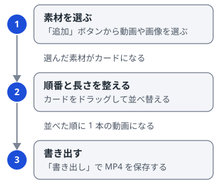
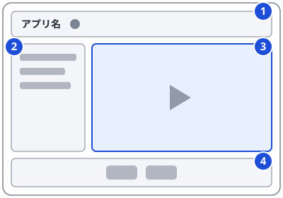
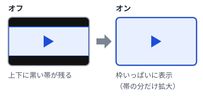

ヘルプ用の図のお手本
3 つの型。文字は 14px 以上、幅 343px でも 12px 以上で読める大きさにしてある。ライト/ダークは OS の設定に合わせて切り替わる。
1. 手順の流れ（flow-steps.svg）

矢印には「次へ何が渡るか」を書く。手順の文と図の番号をそろえる。
2. 画面の場所（screen-callouts.svg）

- 1アプリ名の横の歯車から設定を開く
- 2追加した素材がカードで並ぶ
- 3再生して仕上がりを確かめる
- 4再生・書き出しのボタン
3. 前と後（before-after.svg）

評価語（悪い/良い）ではなく、設定の状態（オフ/オン）と見た目の違いを書く。